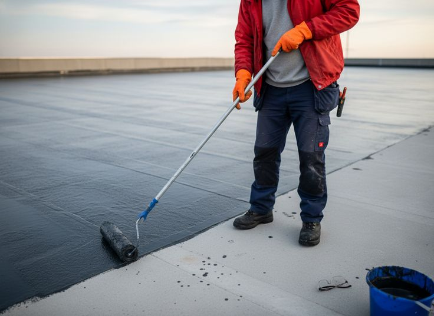
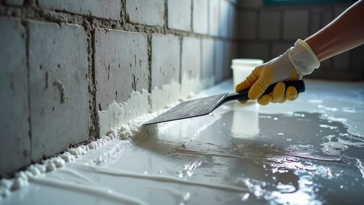
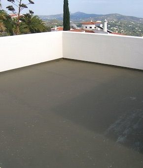
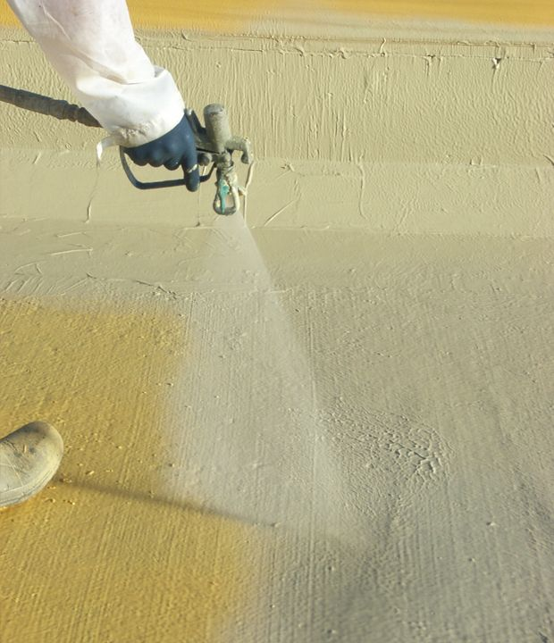
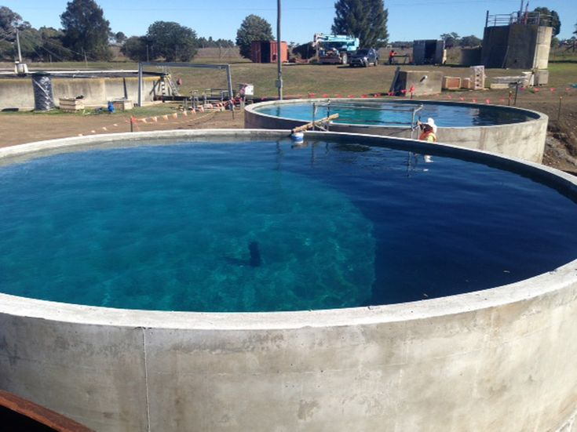
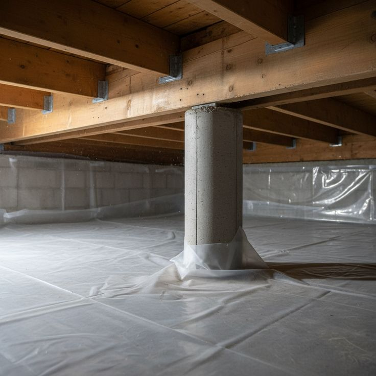
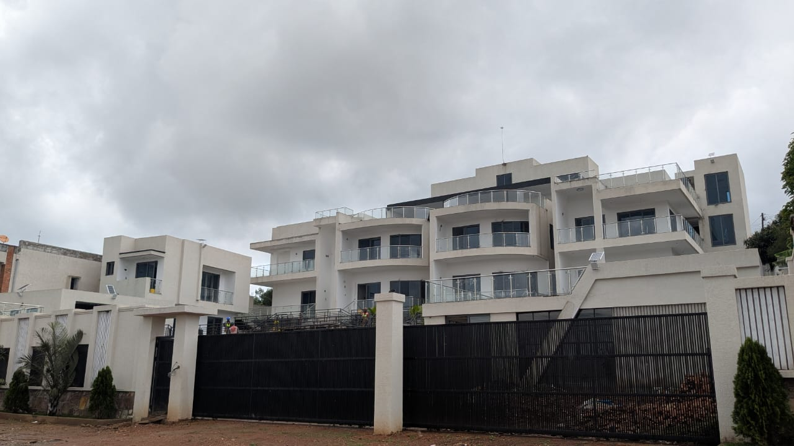

Protect your commercial and residential investments from moisture damage, rising damp, and structural deterioration with our premium waterproofing solutions.

We deploy cutting-edge chemical and membrane technologies to ensure absolute structural impermeability.

Positive and negative side waterproofing for subterranean structures, basements, and lift shafts using crystalline slurries and robust sheet membranes.

Application of APP modified bitumen torch-on membranes, liquid polyurethane coatings, and UV-reflective sealers for concrete rooftops and exposed balconies.

Comprehensive damp-proofing and sub-soil drainage installation behind retaining walls to relieve hydrostatic pressure and eliminate lateral moisture penetration.

Non-toxic, potable-water-safe cementitious waterproofing coatings for underground concrete water reservoirs, overhead tanks, and swimming pool shells.
Why Kigali property managers and builders rely on our waterproofing expertise.
We back our waterproofing installations with comprehensive workmanship and material warranties, giving you total peace of mind.
We utilize industry-leading crystalline penetrants and elastomeric polyurethanes that actively react with moisture to seal micro-cracks.
We conduct thorough thermal and moisture mapping to identify the precise root cause of water ingress before prescribing a solution.
Our application crews are strictly trained in membrane torching, surface preparation, and high-pressure injection techniques.
Glimpses of our structural sealing and damp-proofing operations.


Feedback from commercial property developers and facility managers.
"We experienced severe water ingress in our underground parking facility during heavy rains. Blessed Engineering injected crystalline compounds and resolved the issue completely. Outstanding service."
"They handled the torch-on membrane waterproofing for our 2,000 sqm flat roof in Remera. The workmanship is pristine, and we haven't had a single leak since handover."
Common questions regarding structural damp-proofing and sealing.
Contact our specialized engineering team today for a comprehensive site assessment and transparent quotation.